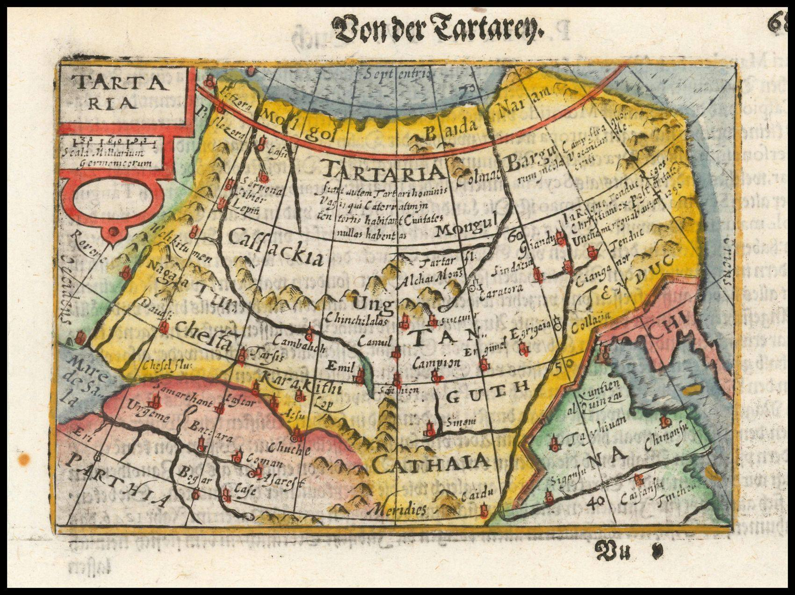
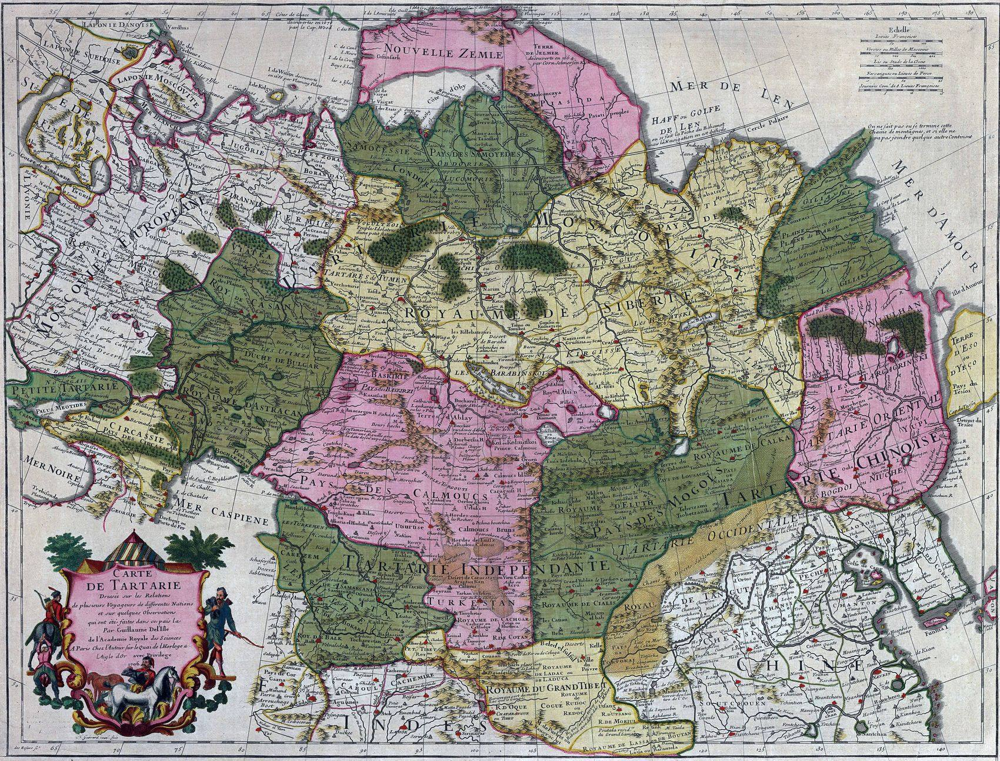
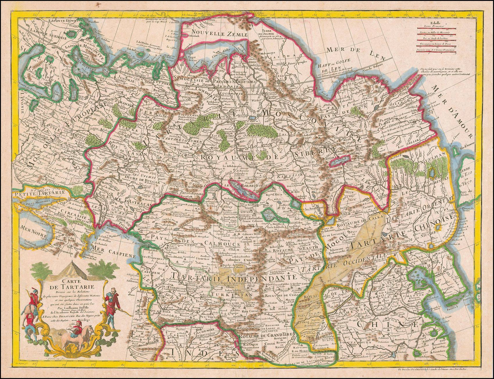
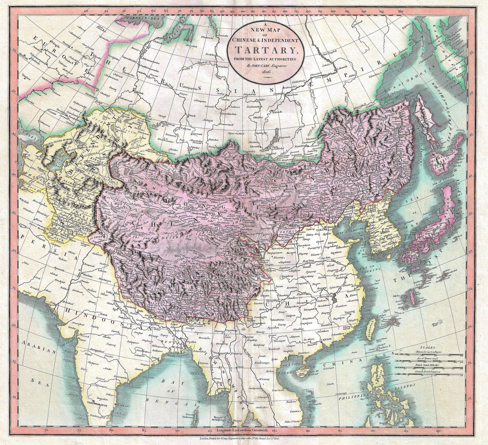
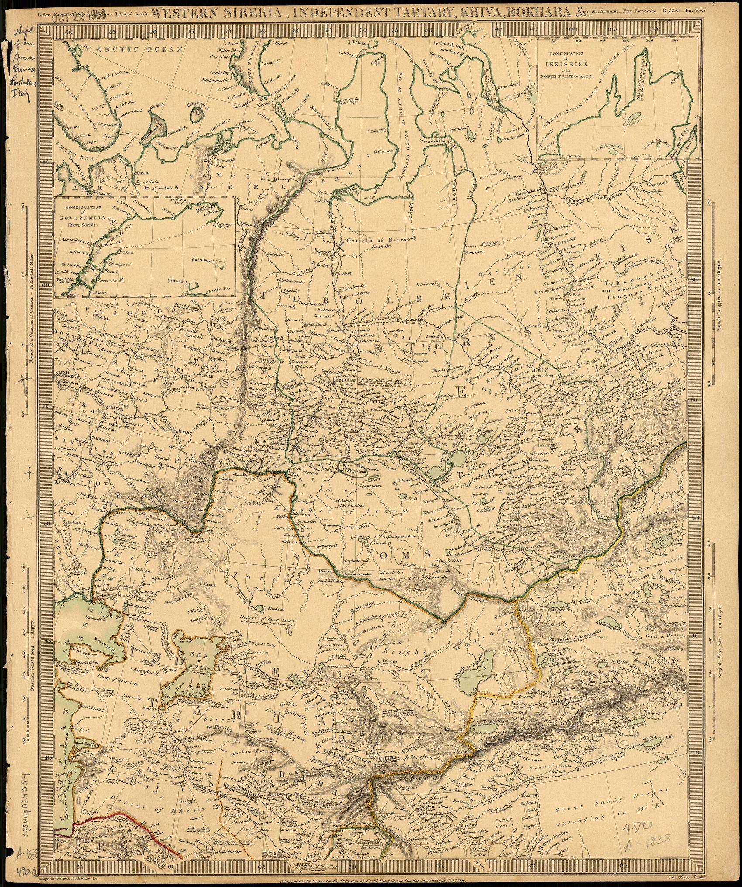
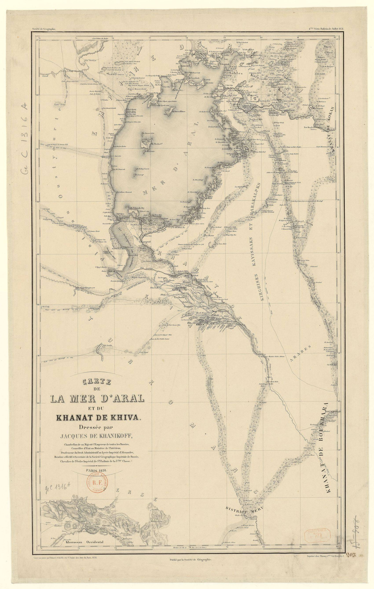
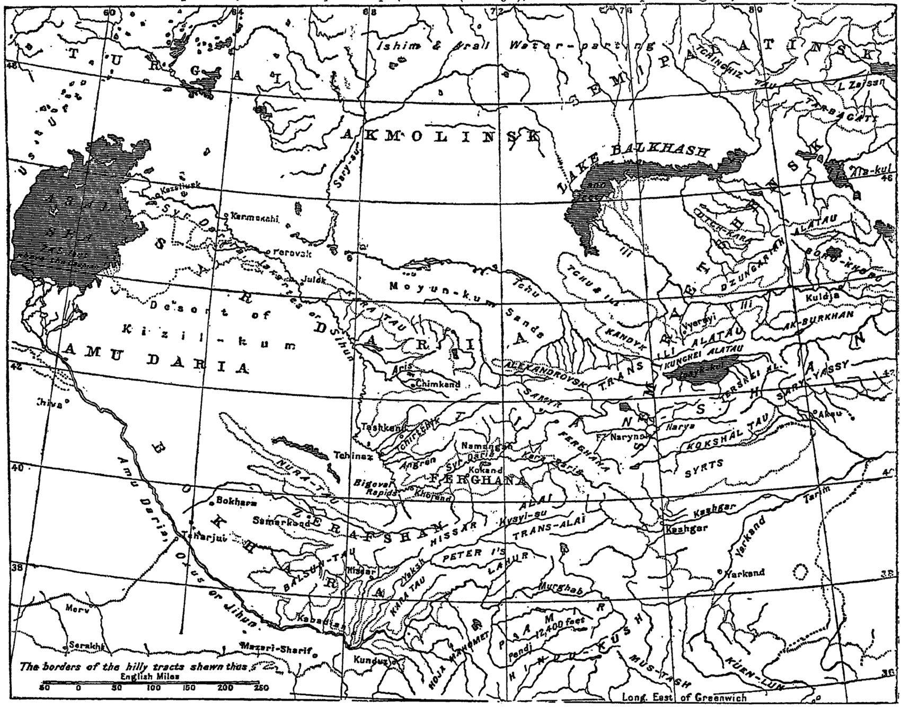

XARITALAR
Buyuk Ipak yo‘li so‘ngidan xonliklar davrigacha. Yetti xarita — yetti bosqich.
Bu bo‘lim — arxiv. Unda yo‘l haqidagi bilim qanday o‘sganini xaritalar bo‘yicha kuzatish mumkin: taxminiy chizmadan aniq o‘lchovgacha. Yillar Buyuk Ipak yo‘li yagona tizim sifatida so‘ngan davrdan boshlanadi va xonliklar davrini qamrab oladi.

Yevropa Markaziy Osiyoni hali ikkinchi qo‘ldan — sayyoh va savdogar xabarlari asosida chizadi. Buyuk Ipak yo‘li yagona yo‘nalish sifatida allaqachon o‘tmishda qolgan: xaritada yo‘l emas, daryo va shahar nomlari asosiy o‘rinni egallaydi.

Fransuz ilmiy kartografiyasining boshlanishi. Delisle xabarlarni tanqidiy solishtirgan va shaharlarni ancha aniq joylashtirgan. Buxoro, Samarqand va Xiva xaritada barqaror nuqtaga aylanadi.

«Relations» — ya’ni safar hisobotlari asosida tuzilgan xarita. Bu davrda karvon yo‘nalishlari sekin-asta chiziq sifatida tushirila boshlaydi: xarita endi nafaqat qayerda, balki qanday borishni ham ko‘rsatadi.

Ingliz tijorat kartografiyasi. XIX asr boshida mintaqa Yevropa uchun siyosiy qiziqish ob’ektiga aylanadi — xaritalar aniqroq va tijoratda ommalashadi.

Sarlavhaning o‘zi muhim: «Independent Tartary» — mustaqil xonliklar. Xiva va Buxoro alohida davlat sifatida ko‘rsatiladi, shimolga — Orenburg va Volga tomon ketadigan yo‘nalishlar belgilanadi.

Bitta xonlikka bag‘ishlangan maxsus xarita. Orol va Amudaryo quyi oqimi batafsil chiziladi — chunki bu yerda yo‘lning taqdirini aynan suv va kechuv belgilagan.

Asr oxiri. Hudud allaqachon o‘lchangan va tavsiflangan: xaritada yo‘llar, bekatlar va yangi temir yo‘l ko‘rinadi. Karvon yo‘li davri yopiladi, uning o‘rniga boshqa transport keladi.
Uch asr ichida xarita «bu yerda shahar bor» dan «bu yerdan shunday boriladi» ga o‘tdi.